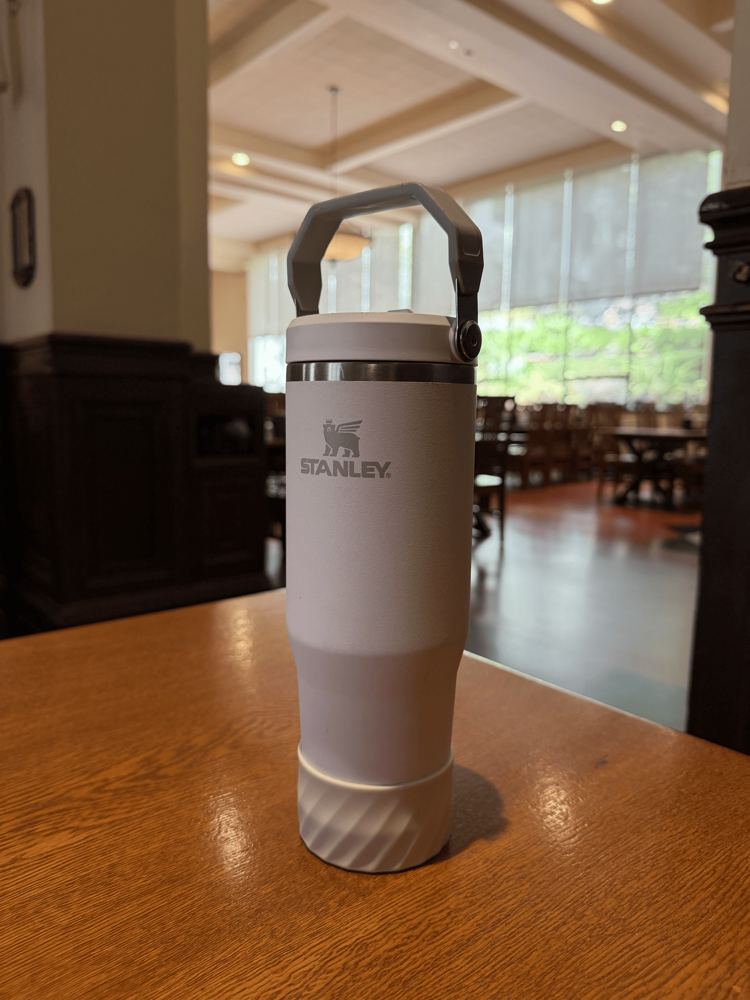

CS180 · Kangxiang Chen · back to portfolio
The thread running through all three parts: perspective is set by where the camera is, not by the lens. Focal length only changes how much of the scene gets cropped.
Same portrait twice: once up close (a normal selfie distance), once stepped back several feet and zoomed in so the face fills the frame the same amount.
Why: the close-up distortion isn't from the focal length, it's from how close the camera is. At ~30 cm, my nose (say 25 cm) is much closer than my ears (say 35 cm) — a 1.4× difference — so the nose is magnified relative to the ears, giving the bulbous look. Stepping back to ~2 m makes the nose (195 cm) and ears (205 cm) nearly equidistant, so features render at the same scale and the face looks natural. Zooming just re-crops the far shot; it doesn't fix or cause the distortion. This is why portraits are shot from a distance at ~85mm.
Same idea reversed, on a building: far away and zoomed in, then walked up close and wide, so the building is roughly the same size in both.


Why: the same distance-ratio effect. From ~100 m back, the near and far parts of the scene (say 100 m and 130 m) are nearly the same distance, so they render at nearly the same scale and the scene collapses into flat stacked layers. Walking up close, the near facade (~5 m) and background (~35 m) differ by 7×, so foreshortening is strong and the scene reads as deep. Again, moving the camera changed the perspective; the wide lens just let the whole facade fit from close up.
The "Vertigo shot": a series of stills taken while moving the camera back and zooming in at the same time, keeping the subject the same size, combined into a GIF.

Why: the effect decouples subject size from perspective. Zoom controls the crop; camera position controls perspective. Dollying back while zooming in holds the subject at a constant size (the zoom cancels the added distance), but the camera's real distance to the scene keeps changing, so the background's depth relationships shift underneath: it flattens and swells toward the subject even though the subject never changes size. A fixed subject against a morphing background reads as impossible, vertiginous motion.